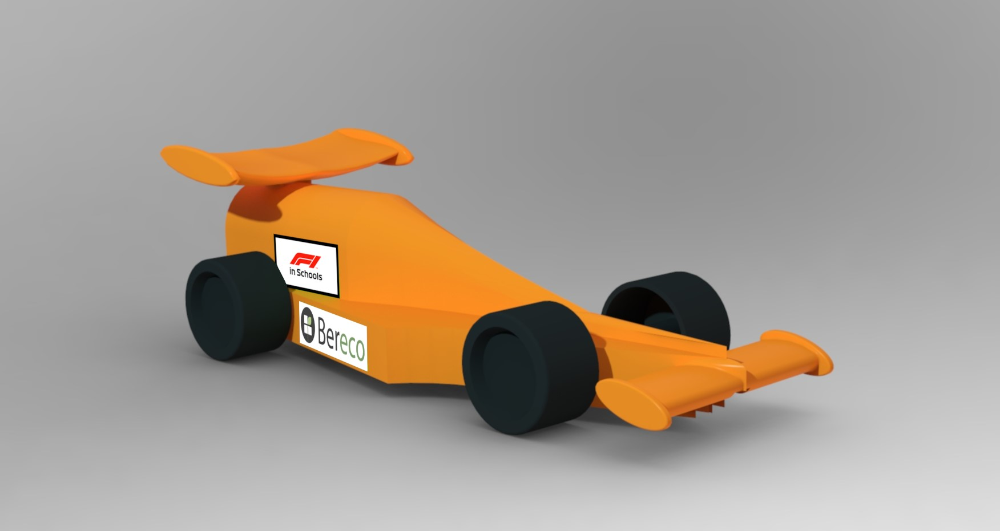
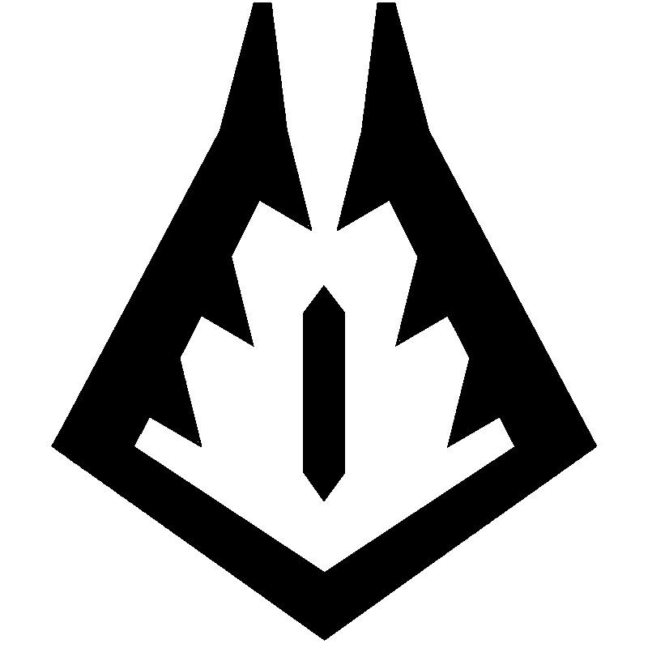
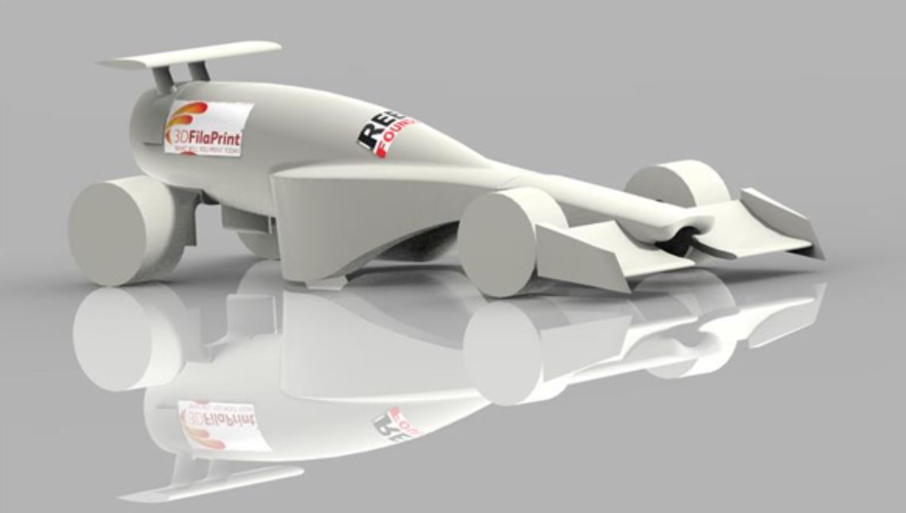

About
This website is all about my projects, it in itself is a project as I have used both HTML and CSS to code it and am hosting it locally. So in essance it is a place I can display my projects but also anything else I might want to show the world, its all a bit of fun!
Projects and Challenges
I try and do as many things as I can as I regret not doing more when I was younger. Some things I've done tech-wise have never been written down and I want to be able to remember them, so lets get cracking:
Bowden Maths Olympiad
I competed in a maths challenge with my school, we worked in teams of two to complete challenges and complex maths probelems. This was my first taste of a non-sporting competition and helped hook me on critical thinking and problem solving.
York Physics Olympiad
This competition was much more focused on team work than individual inteligence. I was part of a team of four students, we travelled down to York on the train (-teacher forgot the tickets!) and spent the day solving problems. We worked on density, velocity and space questions, among others.
F1 2018-19

This was my first ever proper project, I worked with a crack team from my School and this project could be seen as the start of the snowball that I have been rowling. My team back then was composed of four people:
Myself - Graphics Designer and Rescources Manager, Theo - Team Manager, Naveen - Design Engineer, Phillip - Head of Sponsorships. We worked hard and achieved alot,
taking home several awards in the Regional Finals and got into the 2019 National Finals for the Development Class, where we placed 6th!
All in all this was very fun and I contribute it to being part of my shift to a more adult life style. My job title doesn't sound very technical.
However, I built several websites in which I used a range of different Front End Development Languages and techniques. Doing this was very helpful as before this all I had done was some base level HTML websites with minimal CSS.
Arkwright
I was lucky enough to be able to achieve an Arkwright Scholarship, this has enabled me to do so much as it has allowed me to purchase a 3D printer (which I'm fixing more often then printing!).
Ontop of this along with the grant I have been assigned an mentor who has helped guide me through university options and leading several teams in and out of school!
Work Experience - IT/ Software
I was able to secure a work experience at a local energy company, I spent a week working in the IT department rolling out a new internal mangament system which allowed the different departments to work together. This was very useful to me as it built a step which I can use to advance.
Intern - IT/ Software
The energy company from my work experience asked me back and I worked in a small team to further test and build on the managment system. This was over a couple months and was my first ever paid job, so it got me on track to have the life I want to lead.
Bebras
Bebras is a competition centred around problem solving, it is designed to help encourage the type of thinking useful for programming. I thoroughly enjoy competing in these competitions as they are difficult but very satisfying. I have achieved several distinctions through a range of different age catagories.
F1 2020-21
I led a now larger team to a rather bizzare regional finals, due to covid. My team consitsted of Myself - Team Manager, Fraser - R & D, Phillip - Head of Sponsorships, Alex - Head of Team Identity, Theo - Design Engineer, Naveen - Graphics Designer. This project was difficult and stressful but overall it was a lot of fun and I enjoyed it thoroughly. I would describe the project as being a success as we were able to finish all elements of the project in time and with the added pressure of both covid and being year 12 students with exams. I was able to organize meetings, workshop time and other events and team sessions to ensure our success. I led from the front and helped my teammates along the way, encouraging them and employing different tactics to motivate and move the project forward.
This was required as we had the challenging task of creating an F1 in schools car with all the required Research and Development as well as designing and manufacturing the car. Then on top of this we needed to make a set of professional grade portfolios and to create a unified team image. My role was the team manager and so I needed to organize my team, to do this I initially began by using Microsoft Teams, this was good but we lost track of work quickly. I attempted using different forms of project management software packages but settled on using a well-organized excel spreadsheet that was shared with all teammates. This meant I could assign a task with a deadline and then the team member it was allocated could tick it off once it was completed. This meant we were well organized and helped us complete everything in time for the competition.

One of the reasons I feel the project was so successful, was because I feel I have learnt so much. Most of it has been finding my confidence and learning how to manage a team successfully. However, I was also deeply involved in the technical side of the competition, especially at the start as I had to teach my Head of R & D a piece of software that was critical for the airflow testing of our car (Simscale).
I also helped test and develop the wings for the car, doing this I learnt about airflow, SLA (Stereolithography) and FDM - (Fused Deposition Modelling) 3D printing as well as multiple CAD - (Computer Aided Design) software packages which I had to use to help my Head of R & D as well as my Design Engineer fix problems that we were having with the car designs.

I feel I was a significant member of my team as my leadership allowed us to work cohesively together. This was through my encouragement of collaboration between the different members of the team. As well as organizing bi-weekly meetings that allowed us to work together and collaborate.
In broader terms my project has inspired a younger cohort of students, I have been recognized around school as Igneous Racing’s team leader and I believe I have encouraged more prospective engineers to follow their dreams.
To improve, I think I would invest in a better project management software to organize the team. I would create hierarchy diagrams to allow us to break down the project into more bite-sized chunks, this would mean that my teammates would start work sooner and not need as much encouragement as they would have a more manageable task and not become demotivated and require me to remotivate them. This would make the competition easier for me as I could concentrate my efforts on other issues.
If it were to do it again I would do outreach to other schools to encourage the students there to take part as well as students at my school.
I would also try to create a stronger team image as we had a good front to our team but didn’t have as much content and reasoning for why we did what we did. So, in the future I would develop the team and maybe make it an official school team that continues through different year groups so the project can continue to develop even when my team has moved on to university and beyond. As at the moment when we leave, at the end of year 13, the team will be disbanded.
Eng Soc
I have helped setup an Engineering Society at school to help encourage younger students to take up engineering. I, with a couple other students, sit on the executive committee and orgaise talks and trips. The Society has helped me take on more responsibilities and has opened up more opportunities to me.
Talks
I have attended many talks and lectures to further develop my intrest in different subjects:
- Helyx North London Virtual Computer Science Lecture 2020
- See the invisible: the Dark Matter puzzle (Isaac Physics, Arkwright) 2020
- Seeing with He Atoms (Isaac Physics, Arkwright) 2020
- Black Holes (Isaac Physics, Arkwright) 2021
- Bright Sparks: The Future of Green Energy (IET) 2021
- University of East Anglia Climate and Engineering talk 2021
- Renewable Energy – Eng Soc RGS Henna Bains 2021